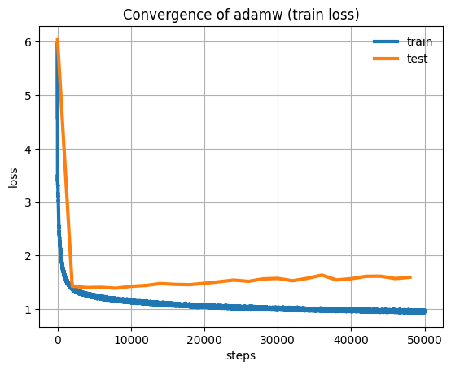

Character-level Transformer on Tiny Shakespeare#

This example demonstrates how to train a small-scale transformer-based language model (inspired by NanoGPT) on the Tiny Shakespeare dataset. The core idea is to train a model that can predict the next character in a sequence of text based on the characters that came before it.
Why the Tiny Shakespeare Dataset?
Manageable Size: Since we’re building a small-scale model, the Tiny Shakespeare dataset provides a suitable training corpus without overwhelming computational resources.
Linguistic Complexity: Shakespeare’s works offer a rich vocabulary and interesting grammatical patterns, making the dataset a good testbed for our model’s language learning abilities.
Accessibility: Easily accessible through TensorFlow Datasets.
Libraries Used
JAX: Provides the foundation for numerical computations and automatic differentiation.
Tensorflow Datasets (
tfds) Offers easy access to the Tiny Shakespeare dataset.Flax’s Linen Module: Provides building blocks for defining our neural network architecture.
Optax: Contains a library of optimization algorithms for training the model’s parameters. In this example we’ll use the
optax.adamw()solver.
import functools
import flax.linen as nn
import jax
import jax.numpy as jnp
from matplotlib import pyplot as plt
import optax
import tensorflow_datasets as tfds
# platform check
print("JAX running on", jax.devices()[0].platform.upper())
JAX running on GPU
Hyperparameters and dataset download#
Next, we set some important hyperparameters. This includes hyperparameters for the training process such as the learning rate LEARNING_RATE and the batch size BATCH_SIZE, as well as model parameters such as the context window size BLOCK_SIZE and the number of layers NUM_LAYERS.
After setting these, we load the Tiny Shakespeare dataset and print the length of the training set, which is around one million characters, and that of the validation set (around 50k characters). Finally, we print a small snippet of the train set.
# @markdown Random seed:
SEED = 42 # @param{type:"integer"}
# @markdown Learning rate passed to the optimizer:
LEARNING_RATE = 5e-3 # @param{type:"number"}
# @markdown Batch size:
BATCH_SIZE = 128 # @param{type:"integer"}
# @markdown Number of training iterations:
N_ITERATIONS = 50_000 # @param{type:"integer"}
# @markdown Number of training iterations between two consecutive evaluations:
N_FREQ_EVAL = 2_000 # @param{type:"integer"}
# @markdown Rate for dropout in the transformer model
DROPOUT_RATE = 0.2 # @param{type:"number"}
# @markdown Context window for the transformer model
BLOCK_SIZE = 64 # @param{type:"integer"}
# @markdown Number of layer for the transformer model
NUM_LAYERS = 6 # @param{type:"integer"}
# @markdown Size of the embedding for the transformer model
EMBED_SIZE = 256 # @param{type:"integer"}
# @markdown Number of heads for the transformer model
NUM_HEADS = 8 # @param{type:"integer"}
# @markdown Size of the heads for the transformer model
HEAD_SIZE = 32 # @param{type:"integer"}
ds = tfds.load("tiny_shakespeare")
# combine train and test examples into a single string
text_train = ""
for example in ds["train"].concatenate(ds["test"]).as_numpy_iterator():
text_train += example["text"].decode("utf-8")
# similarly, create a single string for validation
text_validation = ""
for example in ds["validation"].as_numpy_iterator():
text_validation += example["text"].decode("utf-8")
print(f"Length of text for training: {len(text_train):_} characters")
print(f"Length of text for validation: {len(text_validation):_} characters")
Length of text for training: 1_059_624 characters
Length of text for validation: 55_770 characters
# small sample of the train set
print(text_train[:1000])
First Citizen:
Before we proceed any further, hear me speak.
All:
Speak, speak.
First Citizen:
You are all resolved rather to die than to famish?
All:
Resolved. resolved.
First Citizen:
First, you know Caius Marcius is chief enemy to the people.
All:
We know't, we know't.
First Citizen:
Let us kill him, and we'll have corn at our own price.
Is't a verdict?
All:
No more talking on't; let it be done: away, away!
Second Citizen:
One word, good citizens.
First Citizen:
We are accounted poor citizens, the patricians good.
What authority surfeits on would relieve us: if they
would yield us but the superfluity, while it were
wholesome, we might guess they relieved us humanely;
but they think we are too dear: the leanness that
afflicts us, the object of our misery, is as an
inventory to particularise their abundance; our
sufferance is a gain to them Let us revenge this with
our pikes, ere we become rakes: for the gods know I
speak this in hunger for bread, not in thirst for revenge.
Data preparation#
To prepare the data for the model, we first create a vocabulary consisting of all the unique characters in the dataset. We print that vocabulary and its size.
We then define encoding and decoding functions to convert text into sequences of integers (representing our characters) and vice versa.
Finally, we define a function get_batch that returns random mini-batches of data. This function uses JAX’s jax.lax.dynamic_slice() function to efficiently handle sequences of varying lengths within batches. The @jax.jit decorator compiles this function for faster execution. The function randomly samples a batch from the data and prepares input sequences (x) and target sequences (y). The target sequence is simply the input sequence shifted by one position, as the goal of the language model is to predict the next character given the previous ones.
vocab = sorted(list(set(text_train)))
print("Vocabulary:, ", "".join(vocab))
print("Length of vocabulary: ", len(vocab))
Vocabulary:,
!$&',-.3:;?ABCDEFGHIJKLMNOPQRSTUVWXYZabcdefghijklmnopqrstuvwxyz
Length of vocabulary: 65
# create a mapping from characters to integers
stoi = {ch: i for i, ch in enumerate(vocab)}
itos = {i: ch for i, ch in enumerate(vocab)}
encode = lambda s: [
stoi[c] for c in s
] # encoder: take a string, output a list of integers
decode = lambda l: "".join(
[itos[i] for i in l]
) # decoder: take a list of integers, output a string
# encode train and validation data
train_data = jnp.array(encode(text_train))
eval_data = jnp.array(encode(text_validation))
dynamic_slice_vmap = jax.vmap(jax.lax.dynamic_slice, in_axes=(None, 0, None))
@jax.jit
def get_batch(random_key, data):
"""Prepares a random batch of training data.
Args:
random_key: A random seed for sampling a batch.
data: The complete training dataset.
Returns:
x: Input sequences.
y: Target sequences (shifted inputs).
"""
ix = jax.random.randint(
random_key, shape=(BATCH_SIZE, 1), minval=0, maxval=len(data) - BLOCK_SIZE
)
x = dynamic_slice_vmap(data, ix, (BLOCK_SIZE,))
y = dynamic_slice_vmap(data, ix + 1, (BLOCK_SIZE,))
return x, y
NanoLM Model Definition#
The NanoLM model itself is defined as a Flax Linen module. The core of the model is a Transformer architecture, designed for sequence-to-sequence tasks like language modeling. Key parameters of the model, such as the number of layers, attention heads, and embedding size, are specified here.
Inside the model’s __call__ method, we first embed our input characters into vector representations. Positional embeddings are added to provide the model with a sense of order in the sequence. The core of the Transformer consists of multiple layers. Each layer has two main components:
Multi-Head Attention: This mechanism allows the model to “attend” to different parts of the input sequence, improving its understanding of context and relationships within the text. In the code this is implemented through the
flax.linen.MultiHeadDotProductAttentionclass.Feedforward Network: This network processes the output of the attention layer, applying non-linear transformations to further learn complex patterns in the data. This is implemented through the
flax.linen.Sequentialclass.
Normalization and dropout (for regularization) are used within the layers to improve training stability. Finally, a dense layer maps the model’s output to the vocabulary size, producing probabilities for each character as the next potential character.
The generate function enables the model to create new text sequences. It iteratively generates one character at a time, conditioned on the previously generated text.
class NanoLM(nn.Module):
"""NanoLM model."""
vocab_size: int
num_layers: int = 6
num_heads: int = 8
head_size: int = 32
dropout_rate: float = 0.2
embed_size: int = 256
block_size: int = 64
@nn.compact
def __call__(self, x, training: bool):
seq_len = x.shape[1]
x = nn.Embed(self.vocab_size, self.embed_size)(x) + nn.Embed(
self.block_size, self.embed_size
)(jnp.arange(seq_len))
for _ in range(self.num_layers):
x_norm = nn.LayerNorm()(x)
x = x + nn.MultiHeadDotProductAttention(
num_heads=self.num_heads,
qkv_features=self.head_size,
out_features=self.head_size * self.num_heads,
dropout_rate=self.dropout_rate,
)(
x_norm,
x_norm,
mask=jnp.tril(jnp.ones((x.shape[-2], x.shape[-2]))),
deterministic=not training,
)
x = x + nn.Sequential([
nn.Dense(4 * self.embed_size),
nn.relu,
nn.Dropout(self.dropout_rate, deterministic=not training),
nn.Dense(self.embed_size),
])(nn.LayerNorm()(x))
x = nn.LayerNorm()(x)
return nn.Dense(self.vocab_size)(x)
@functools.partial(jax.jit, static_argnames=("self", "length"))
def generate(self, rng, params, length):
def _scan_generate(carry, _):
random_key, context = carry
logits = self.apply(params, context, training=False)
rng, rng_subkey = jax.random.split(random_key)
new_token = jax.random.categorical(
rng_subkey, logits[:, -1, :], axis=-1, shape=(1, 1)
)
context = jnp.concatenate([context[:, 1:], new_token], axis=1)
return (rng, context), new_token
_, new_tokens = jax.lax.scan(
_scan_generate,
(rng, jnp.zeros((1, self.block_size), dtype=jnp.int32)),
(),
length=length,
)
return new_tokens
State, Optimizer, and Loss Definition#
This section initializes the model’s parameters, defines the loss function used for language modeling, and sets up the training and evaluation processes.
In this case the loss function loss_fun is the cross-entropy. It uses dropout for regularization, introduced via the rngs={"dropout": dropout_key} argument. We also define a function for evaluating the model’s performance on unseen data (eval_step).
model = NanoLM(
vocab_size=len(vocab),
num_layers=NUM_LAYERS,
num_heads=NUM_HEADS,
head_size=HEAD_SIZE,
dropout_rate=DROPOUT_RATE,
embed_size=EMBED_SIZE,
block_size=BLOCK_SIZE,
)
def loss_fun(params, x, y, dropout_key):
logits = model.apply(params, x, training=True, rngs={"dropout": dropout_key})
return optax.softmax_cross_entropy_with_integer_labels(
logits=logits, labels=y
).mean()
@jax.jit
def eval_step(params, x, y):
logits = model.apply(params, x, training=False)
return optax.softmax_cross_entropy_with_integer_labels(
logits=logits, labels=y
).mean()
key = jax.random.PRNGKey(SEED)
key, subkey = jax.random.split(key)
var_params = model.init(
key,
jnp.ones((BATCH_SIZE, BLOCK_SIZE), dtype=jnp.int32),
training=False,
)
We’ve now instantiated a NanoLM model with the following number of parameters
n_params = optax.tree.size(var_params)
print(f"Total number of parameters: {n_params:_}")
Total number of parameters: 3_408_513
Model training#
We start by creating an optimizer and instantiating its state. In this case we’ll use optax.adamw() but it’s possible to replace this with other optax optimizers.
We then proceeded to the training loop. For maximum efficiency we extracted the most computationally intensive tasks inside the step function and just-in-time compile this function using @jax.jit. This allows JAX to perform some optimizations in our code and generally achieve a much higher efficiency than without.
Inside the training loop, we call the aforementioned step functions, as well as computing accuracy on a validation set every N_FREQ_EVAL iterations.
# To run with SGD instead of adam, replace `adam` with `sgd`
opt = optax.adamw(learning_rate=LEARNING_RATE)
opt_state = opt.init(var_params)
%%time
all_train_losses = []
all_eval_losses = []
# we define one iteration of the optimizer and JIT this function
@jax.jit
def step(key, params, opt_state):
key, subkey = jax.random.split(key)
batch = get_batch(key, train_data)
loss, grad = jax.value_and_grad(loss_fun)(params, *batch, subkey)
updates, opt_state = opt.update(grad, opt_state, params)
params = optax.apply_updates(params, updates)
return params, key, opt_state, loss
for i in range(N_ITERATIONS):
var_params, key, opt_state, loss = step(key, var_params, opt_state)
all_train_losses.append(loss)
# once every N_FREQ_EVAL we compute loss on the validation set
if i % N_FREQ_EVAL == 0:
key, subkey = jax.random.split(key)
eval_loss = eval_step(var_params, *get_batch(subkey, eval_data))
all_eval_losses.append(eval_loss)
print(f"Step: {i}\t train loss: {loss}\t eval loss: {eval_loss}")
Step: 0 train loss: 4.586461067199707 eval loss: 6.037547588348389
Step: 2000 train loss: 1.3876519203186035 eval loss: 1.4252502918243408
Step: 4000 train loss: 1.280821442604065 eval loss: 1.4000993967056274
Step: 6000 train loss: 1.1978516578674316 eval loss: 1.4045076370239258
Step: 8000 train loss: 1.177159070968628 eval loss: 1.387284278869629
Step: 10000 train loss: 1.1472305059432983 eval loss: 1.423332929611206
Step: 12000 train loss: 1.107376217842102 eval loss: 1.4390857219696045
Step: 14000 train loss: 1.096900224685669 eval loss: 1.474606990814209
Step: 16000 train loss: 1.0772775411605835 eval loss: 1.4595460891723633
Step: 18000 train loss: 1.050074577331543 eval loss: 1.4540534019470215
Step: 20000 train loss: 1.0540519952774048 eval loss: 1.4794009923934937
Step: 22000 train loss: 1.035787582397461 eval loss: 1.5094046592712402
Step: 24000 train loss: 1.0402700901031494 eval loss: 1.5403311252593994
Step: 26000 train loss: 1.0363699197769165 eval loss: 1.5168808698654175
Step: 28000 train loss: 1.0000224113464355 eval loss: 1.5624736547470093
Step: 30000 train loss: 0.9905486106872559 eval loss: 1.5720288753509521
Step: 32000 train loss: 0.9986284971237183 eval loss: 1.526949167251587
Step: 34000 train loss: 0.9822986125946045 eval loss: 1.5732147693634033
Step: 36000 train loss: 0.9837050437927246 eval loss: 1.6341228485107422
Step: 38000 train loss: 0.9723658561706543 eval loss: 1.542256474494934
Step: 40000 train loss: 0.9632444977760315 eval loss: 1.5658419132232666
Step: 42000 train loss: 0.9664344787597656 eval loss: 1.6112396717071533
Step: 44000 train loss: 0.9476494789123535 eval loss: 1.6128767728805542
Step: 46000 train loss: 0.9473679065704346 eval loss: 1.5689520835876465
Step: 48000 train loss: 0.9642226696014404 eval loss: 1.5935924053192139
CPU times: user 15min 19s, sys: 9min 8s, total: 24min 27s
Wall time: 22min 48s
plt.title("Convergence of adamw (train loss)")
plt.plot(all_train_losses, label="train", lw=3)
plt.plot(
jnp.arange(0, len(all_eval_losses) * N_FREQ_EVAL, N_FREQ_EVAL),
all_eval_losses,
label="test",
lw=3,
)
plt.xlabel("steps")
plt.ylabel("loss")
plt.grid()
plt.legend(frameon=False)
plt.show()

Text generation#
Finally, after training, we use the generate function to let the NanoGPT model demonstrate its ability to create text that resembles Shakespeare, albeit in a miniature form.
# Let's now generate some text
key, subkey = jax.random.split(key)
text = model.generate(key, var_params, 1000)[:, 0, 0].tolist()
print(decode(text))
GREMIO:
So called, officer:
Peace, for me would be a mighty heart, and I'll do
any good.
MERCUTIO:
Ay, look'd dead made.
VALERIA:
Rather is in the present book of love
Than piece thy thoughts to shame, but yet book known
Where my Edward, whom I so could do it to him;
And see how the government of your blood,
Congeal'd your kingdom then we resign your highness;
Unless you scarcely know how I came, his wife;
And I may contain a little of England's heart
After a king of disdain! supect, tribunes,
The sun under thine is too large:
The senators do add to their trenches stretch'd,
With such as a toy, or be it known, I would
See my shame home, sweet friends, we are too dear:
Tell me consul, what's become the soldiers?
SOMERSET:
So fled; alas! much is possess'd by this means?
Away with the nightingale. He hast he wounded his sceptre
And hide his heir: go hence, to have his hearts
To close our bloods, for the climate to be
Ere one would be so often been seen, a greater stranger
Can have you